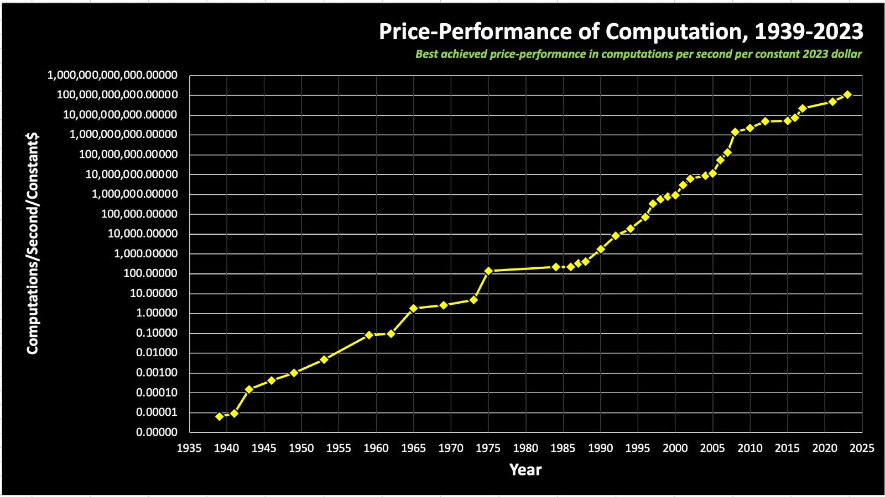
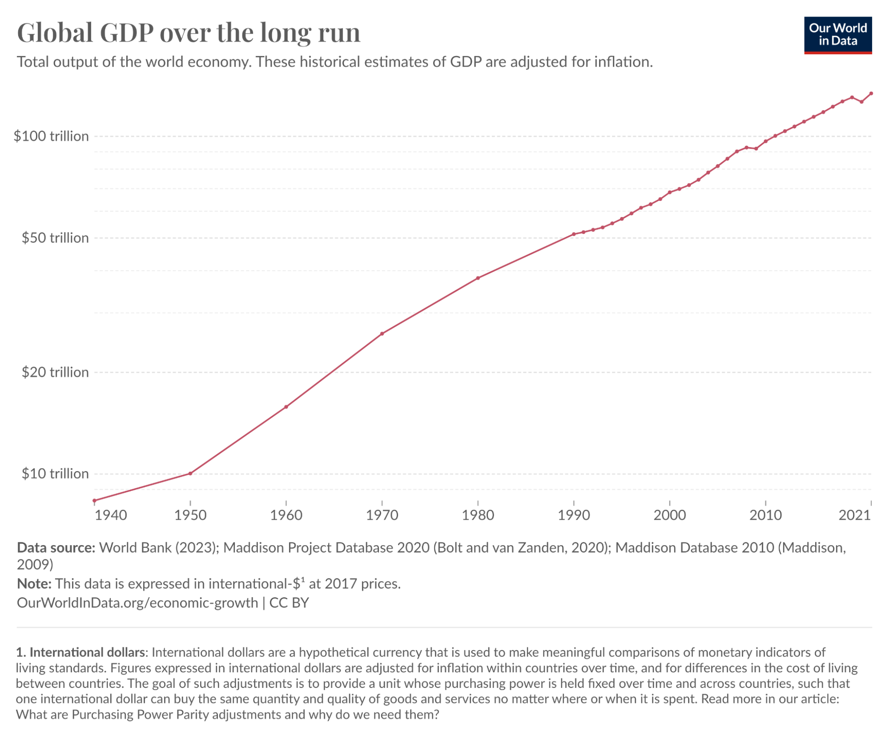
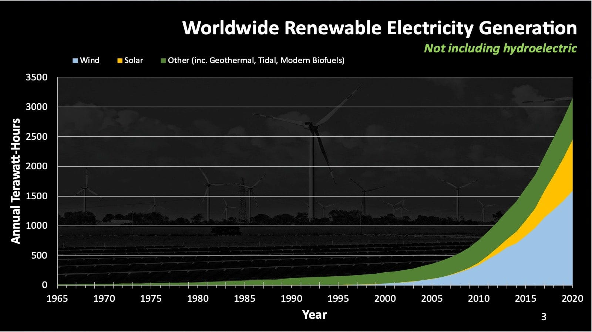
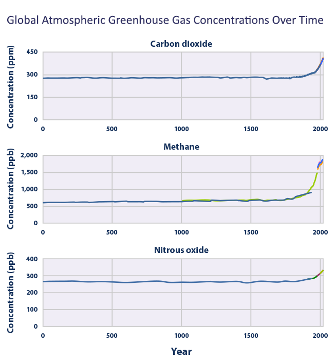

Ray Kurzweilis an American computer scientist, futurist, and director of engineering at Google who is known for his remarkably accurate predictions in the field of technology. He frequently presents a graph illustrating the exponential growth in the best achieved price performance of computation per second per constant 2023 dollarfrom 1939 to 2023.
The graph's subject matter warrants some explanation. "Best achieved price performance" refers to the most cost-effective computer available on Earth in a given year, offering the highest performance at the lowest price. "Per second per constant 2023 dollar" indicates that the graph is adjusted for inflation, assuming that one 2023 dollar is spent on computation every second using the most efficient computer of that year. The y-axis of the logarithmic graph displays five significant figures after the decimal point. Although the graph appears linear, it actually represents exponential growth as the values increase over time.

The graph spans a range from a minimum of 0.00001 (or 10⁻⁵) computations per second per constant 2023 dollar in 1939 to a maximum of 100 billion (or 10¹¹) in 2023, representing an astonishing growth of approximately 20 quadrillion-fold. Ray has many insights on this graph and refers to it as his main graph. For exle, for the first 40 years, no one was aware of this. War, peace, and business cycles did not affect the rate of progress. In 1999, Kurzweil predicted that artificial intelligence would pass the Turing test by 2029. This bold assertion prompted Stanford University to convene an international conference of AI experts to reach a consensus on the timeline for achieving this milestone. The conference participants concluded that Kurzweil's prediction was overly optimistic, instead estimating that the Turing test would be passed by 2099. However, in light of recent advancements, influential figures like Elon Musk now consider Kurzweil's predictions to be conservative.

If you were to take one second of computation at the 2023 maximum of 100 billion computations per second per constant 2023 dollar and calculate its cost using the 1939 minimum price performance of 0.00001 computations per second per constant 2023 dollar, the result would be a staggering $10 quadrillion. To put this into perspective, this figure is approximately 95 times the estimated world GDP in 2023, which was around $105 trillion. It is worth noting that world GDP is also experiencing exponential growth.
This trend encompasses everything in computation ranging from transistors to LLMs, which Ray thinks should be called Large Action Models because of the diversity of data types they operate with, such as images and video, audio, and text. Only humans(population: 8 billion) have been observed using tools to make other tools, which is essential for computation. Computation has enabled the internet, which has 5.35 billion users(~66%), and smartphones with 6.4 billion users(~80%). In 2025, Starlink(~70% of SpaceX’s revenue) will offer direct to cell satellite voice, data, and text, which will provide internet for the 1 billion smartphone users without internet access and allow every smartphone user to travel anywhere on Earth and stay connected as long as they are within line of sight of a satellite.
Ray Kurzweil predicts that by 2030, we will have devices as capable as smartphones as small as blood cells. Computation is also enabling robotic factories like the Tesla Gigafactory in Berlin(which is not entirely automated yet), electric vehicles, and humanoid robots like Optimus, the new electric Atlasby Boston Dynamics, and Figure 01by Figure. My favorite technological advancementis the 2 day development timefor the Moderna COVID-19 vaccine by sequencing through billions of mRNA sequences, which took 10 months to distribute. Alfred North Whiteheadis quoted saying “Civilization advances by extending the number of important operations which we can perform without thinking about them.”

Exponential trends extend beyond computation and can be found in the capacity of renewable energy sources such as wind, solar, geothermal, tidal, and biofuels. I highly recommend this read on Hydro-Quebecto understand why hydroelectric isn’t included in this graph. The EPA says that the largest source of greenhouse gases, causing climate change, most commonly C02, is the burning of fossil fuels. Today, on 4/20, the New York Times reportsthat global carbon dioxide levels as of 2024 have reached 420 parts per million. Our energy usage will increase with AI, but so will our energy efficiency and renewable energy usage.

Kurzweil predicts that within the next decade we will have a completely renewable global supply of energy, and at that point we will be harnessing just one ten-thousandth of the sunlight that reaches Earth’s surface. Only a fraction of the available solar energy is needed to power our current electricity needs.
Links:
- AI escape velocity: A conversation with Ray Kurzweil - Bessemer Venture Partners
- https://ourworldindata.org/grapher/global-gdp-over-the-long-run?yScale=log&;time=1940..latest#faqs
- Ray Kurzweil - Wikipedia
- Elon calls Kurzweil conservative on his predictions - YouTube clip
- The $105 Trillion World Economy in One Chart - Full-size
- Starlink Business | Direct To Cell
- Ray Kurzweil on smartphones, artificial intelligence and the human brain | ZDNET
- Giga Berlin Fly Through 2.0
- Tesla
- Optimus - Gen 2
- All New Atlas | Boston Dynamics
- Figure Status Update - OpenAI Speech-to-Speech Reasoning
- How AI played an instrumental role in making mRNA vaccines - Big Think
- mRNA vaccines for infectious diseases: principles, delivery and clinical translation | Nature Reviews Drug Discovery
- I Was There When: AI helped create a vaccine | MIT Technology Review
- The Project Gutenberg eBook #41568: An Introduction to Mathematics.
- Powerline — Outside/In
Some noteworthy technologies: